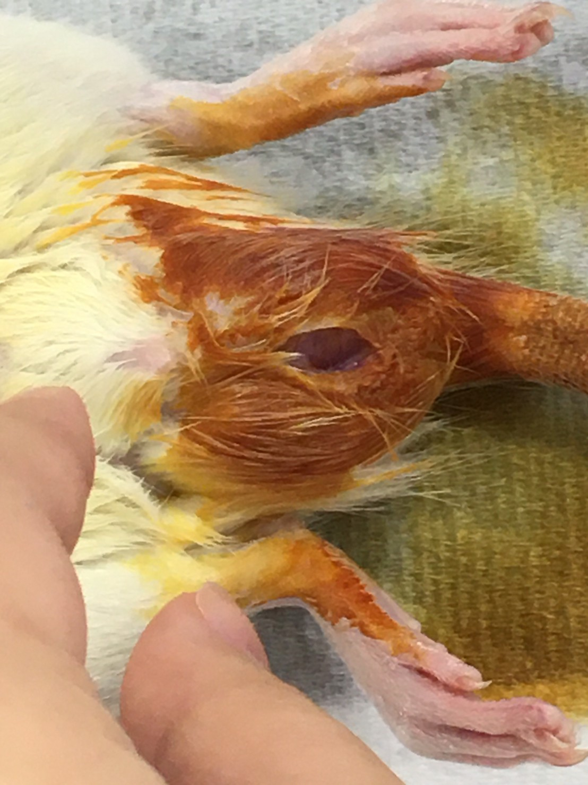

生理實驗室內
學妹1「保定大鼠也太難了吧...。」
學妹2「對啊...何況還要打麻醉。」
"學妹真是勤奮啊...不對不對，這個時間做實驗也太怪異了吧"
懷著不安的心情，你決定...
大三上學期，你終於如願以償進入動物解剖生理實驗室。結束了一天的課程，晚間時你打算前往老師辦公室致意，經過生理實驗室卻看到教室燈亮著，你心想，誰會在這個時間做實驗？而你走進去...
學妹1「保定大鼠也太難了吧...。」
學妹2「對啊...何況還要打麻醉。」
"學妹真是勤奮啊...不對不對，這個時間做實驗也太怪異了吧"
懷著不安的心情，你決定...
我「有什麼需要幫忙的嗎？我是生理實驗室新來的助手，應該能幫上小忙。」
學妹1「我們不太會保定大鼠，請問怎樣是正確的方式？」
我「好的保定會讓大鼠四肢與頭部無法亂動，避免麻醉或抽血時造成操作員或大鼠受傷。」
學妹2「學姊好專業~」
學妹1「學姊學姊，那我們該如何進行解剖呢？」
"突然開始懷疑她們到底是不是我們系的學妹..."
這時候你會...
為了我大動科系的未來著想，不可以放棄任何一個學弟妹!
(還有大鼠嗚嗚嗚)
*避免引起不適，特此說明圖中大鼠並未死亡，只是睡了一下^^
我「進行手術前一定要將桌面、手術器具、手部與大鼠進行手術之部位以酒精消毒，避免大鼠在術後細菌感染而死亡。」
學妹2「為了延續大鼠的性命一定要好好消毒！」
我「話說，你們解剖這隻老鼠要幹嘛啊？」
學妹1「我們...只是要學習解剖啦。」
"但這個時間點怎麼想都不對阿阿阿"
忍著頭皮發麻的感覺，只好繼續教她們了。接下來你該...
在未麻醉的狀態下為大鼠動刀十分地危險，不僅大鼠的死亡機率會大幅上升，操作員也可能因大鼠掙扎而誤傷自己。手術的進行必須快狠準，因此必須在動刀前就具備充足的知識與對手術的理解，認真上課或寫預報都是方法之一。

我「解剖的傷口盡量越小越好，才能減低對大鼠的傷害。」
學妹2「為什麼每次都是公鼠被去勢...」
我「嗯你說什麼？」
學妹1「啊啊他說，去勢手術有什麼需要特別注意的嗎？」
"感覺不是這句...算了算了"
我「如果沒有先結紮再切除睪丸，會造成大鼠失血過多而死亡。」
接下來你該...
我「公鼠失去單側睪丸並不會嚴重影響其生理狀況，甚至會有睪固酮上升的現象，但若完全切除則會造成睪固酮分泌過低，而有性功能障礙、情緒障礙與心血管疾病等影響。」
學妹1「原來是這樣啊...」
"為什麼是這種惋惜的口氣...？"
我「必須從傷口的正中央開始縫，才能縫得容易癒合又漂亮。」
我「時間晚了，詳細的技術你們以後再學吧，我得先離開了。」
學妹1、學妹2「好的謝謝學姊！」
我將大鼠放回籠子，並整理完環境。
"難得學妹這麼好學，交個朋友吧。"
我「對了，你們叫什麼名子啊？」
當我忙完打算和學妹們閒聊時，才發現他們已經不見了。
我「他們剛剛不是還挺有禮貌的嗎...算了以後總會遇到的。」
至此之後，我從未在學校的任何角落遇到他們兩個。
但是我曾經做了一個夢，夢裡有兩隻老鼠相互依偎著。
End